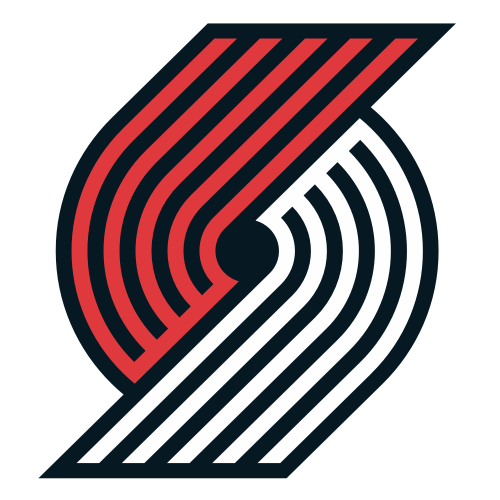

Portland Trail Blazers (en español, Pioneros de Portland) es un equipo de baloncesto de la NBA con base en Portland, Oregón. Juega en la División Noroeste de la Conferencia Oeste. Antes de trasladarse al Rose Garden en 1995, los Blazers disputaban sus partidos como locales en el Memorial Coliseum. El equipo entró en la NBA en 1970 y es la primera franquicia profesional en Oregón de una gran liga deportiva, ya que posteriormente nació el Portland Timbers de la MLS. Los Blazers disfrutaron además de un gran apoyo por parte del público; desde 1977 hasta 1995, el equipo llenó su estadio durante ochocientos quince partidos en casa consecutivos, siendo la mayor racha en la historia del deporte profesional estadounidense.
Los Blazers dominaron el mundo de la canasta en la temporada 1976-77, mostrando a todo el país un baloncesto excitante y un nivel de juego nunca visto antes en Oregón. Tras un decente 49-33 en la temporada regular, el equipo pudo al fin disfrutar de su primera participación en unos playoffs de la NBA.9 Este fue el primer año del reinado del entrenador Jack Ramsay. Su década con Portland solidificaría su reputación como uno de los técnicos más creativos de la liga. También fue el año en el que cuatro equipos de la ya desaparecida ABA se unieron a la NBA (Denver Nuggets, New York Nets, Indiana Pacers y San Antonio Spurs). La fusión llevó a una reorganización de las estrellas de la liga, por lo que Portland adquirió a Maurice Lucas con la segunda elección del draft de dispersión de la ABA.
Los Blazers han llegado a las Finales de la NBA en tres ocasiones, ganando su único campeonato en 1977 y finalizando subcampeones en 1990 y 1992.2 Además, el equipo se ha clasificado para playoffs en 25 de las 36 temporadas que llevan en la NBA desde su existencia, incluyendo una racha de 21 apariciones consecutivas desde 1983 hasta 2003.3 Seis jugadores que pertenecen al Basketball Hall of Fame han vestido la camiseta de los Blazers (Lenny Wilkens, Bill Walton, Clyde Drexler, Drazen Petrovic, Arvydas Sabonis y Scottie Pippen)4 y cuatro han sido reconocido por la NBA como uno de los 50 mejores jugadores de la historia de la liga (Scottie Pippen, Lenny Wilkens, Bill Walton y Clyde Drexler). Walton es el jugador más exitoso de la historia de los Blazers, habiendo ganado el MVP de las Finales en 1977 y el MVP de la temporada al año siguiente.5 Geoff Petrie, Sidney Wicks, Brandon Roy y Damian Lillard han recibido el premio Rookie del Año con el equipo, Mike Schuler y Mike Dunleavy el de Mejor Entrenador del Año, y Lenny Wilkens y Jack Ramsay han sido incluidos en el Hall of Fame como entrenadores.
 Indice
Indice